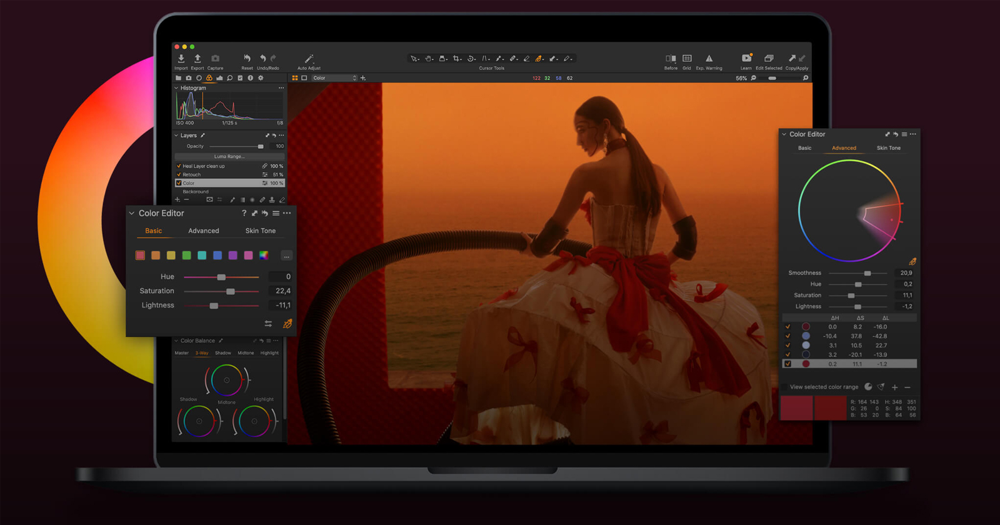
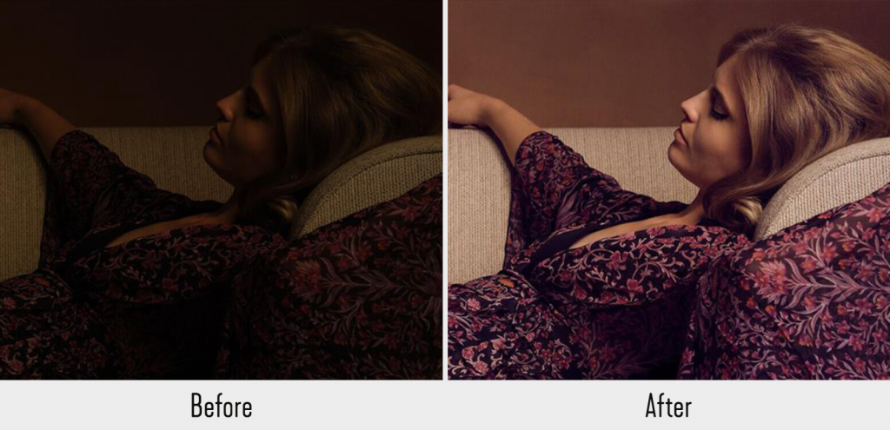

Photography Software
Capture One Pro
Capture One is a RAW image editor made by the camera company, Phase One. It is similar to the other software on this list, but with some solid distinctions.

Capture One Interface
Like any truly great photo editor, Capture One allows you to customize its layout to your liking. You can even create and modify the program’s keyboard shortcuts so that they’re intuitive to you and tailored to your needs.
And, like Lightroom, Capture One doubles as a photo editor and an organizer. But, its photo library functions a bit differently than Lightroom.
Capture One stores your photos both in sessions and in collections. What’s the difference? Sessions allow you to group your photos by shoots for different clients, which helps you better find the best images to edit. Collections allows you to manually sort your images.
And, Capture One offers a keywording tool so that you can tag your photos with your own unique tags. Then, you can more easily locate similar images. For example, you could tag all of your portraits with a “portraits” tag, so that you could pull up all of your portrait photos in a simple keyword search.
Key Features
With Capture One, you get:
- Layers – Not all editing tools have layers, and those that do can start to lag if you pile on too many. Capture One doesn’t grow sluggish, despite offering many adjustments to make on each layer.
- Advanced Color Editing – Capture One gives you more flexibility with sliders to adjust the granularity of color changes (even for the same colors).s
- Annotations – Make notes for your self or streamline collaborations with Capture One’s annotations tool.
- SpeedSpeed – When handling large volumes RAW files over 20 megapixels large, Capture one has shown to operate at a higher performance level than the professional heavyweight contenders in this space
- Option to pay a one-time flat fee – While you can purchase a monthly plan — which is double the cost of Adobe Creative Cloud’s Plan — you do have the option to purchase Capture One for a one time fee.
Capture One Extras
Like many of its competitors, Capture One offers opportunities to expand its capabilities with plugins and presets. Compared to addons offered for other photo editing programs, Capture One’s addons are relatively new to the software. But, that doesn’t make them less powerful.
For example, a plugin for Format allows you to upload your work directly to your online portfolio at Format through the Capture One software. That same plugin also lets you submit proofing galleries to clients and update your online blog.
Presets also help you to expand the software’s functions by providing you with editing formulas to achieve specific photo edits. These styles and presets work to make your edits even faster.
Of course, because Capture One isn’t quite as well-known or as popular as Adobe or Skylum, fewer presets exist on the Capture One marketplace. However, as more and more people discover just how great Capture One is, that tide will continue to shift.
Cost
How much you’ll pay for Capture One depends on the plan you choose. Unlike many photography software, Capture One offers different software for different cameras. Choose from these single-user packages:
- Capture One for Every Camera – Subscriptions start at $20/month. Purchase a license for a $299 one-time fee.
- For Fujifilm – Subscriptions start at $9.99/month. Purchase a license for a $129 one-time fee.
- For Sony – Subscriptions start at $9.99/month. Purchase a license for a $129 one-time fee.
- For Nikon – Subscriptions start at $9.99/month. Purchase a license for a $129 one-time fee.